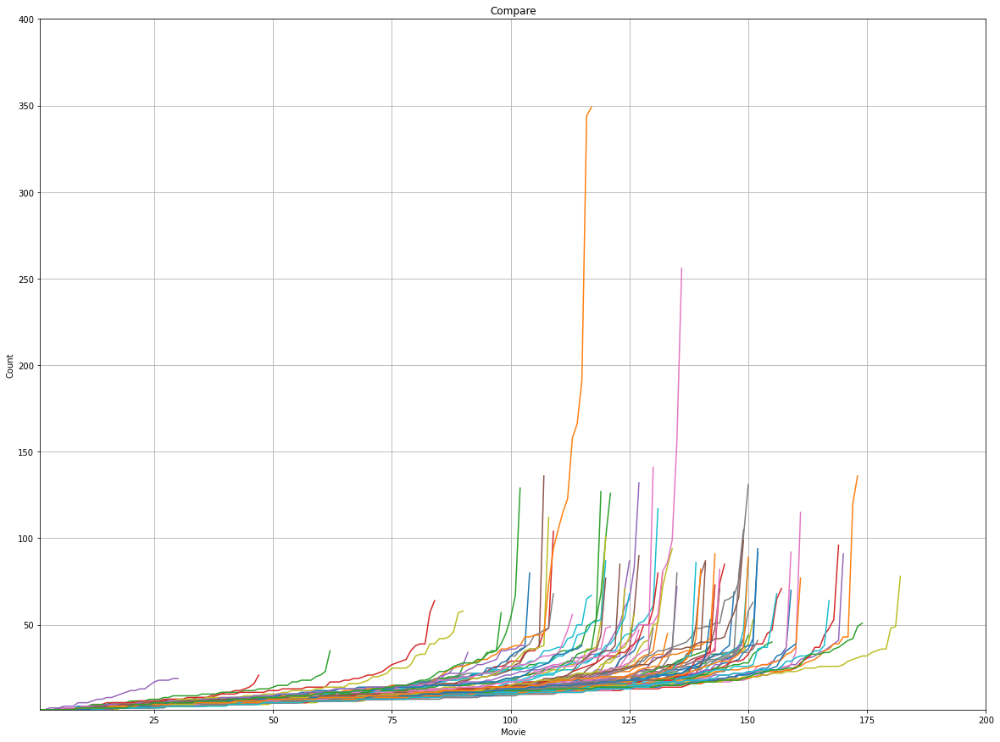

Overview
I conducted multiple data-driven analysis projects to understand how people behave, decide, and respond across different contexts, including content consumption, product evaluation, and purchase-related social discourse.
Rather than focusing on descriptive analytics alone, I designed analytical frameworks that transform fragmented data into structured insights, enabling clearer decision-making for product and marketing strategy.
Across these projects, I worked with CSV datasets, social media listening data, SQL-based categorization, and Python-based analysis to connect raw signals to actionable conclusions.
Scope of Analysis

Content Consumption
Designed a comparison framework to analyze diversity and popularity concentration across countries.

Product & System Data
Structured multi-source urban datasets into a safety-oriented route evaluation system.

Purchase Decision
Translated social media conversations into marketing insights by categorizing real consumer decision factors.
Challenge
Data is often abundant but not directly usable for decision-making.
Raw datasets, social media conversations, and ranking data contain valuable signals, but without a clear analytical structure, they remain fragmented and difficult to interpret.
The core challenge was not collecting data, but designing a framework that transforms diverse data sources into meaningful indicators that can guide strategic decisions.
Insight → Idea
Insight
Raw data does not create value—the structure of analysis determines the direction of insights.
The same dataset can lead to very different conclusions depending on how it is organized, measured, and interpreted.
Idea
Design analytical frameworks that convert fragmented data into decision-ready insights, linking data directly to strategy and action.
Strategy
Framework-Driven Analysis Design
I focused on designing analytical structures that define how data should be interpreted, rather than simply extracting metrics.
Signal-to-Insight Translation
I transformed raw data signals into structured indicators such as diversity vs. concentration, reach-based influence, and categorized decision factors that directly inform decision-making.
Cross-Context Application
I applied the same analytical thinking across different domains—content consumption, product systems, and consumer purchase behavior—to validate its adaptability and strategic usefulness.
Workflow
Collection
Gathered ranking data, public datasets, and social media conversations from multiple sources.
Structuring
Defined analytical categories, comparison metrics, and classification logic to organize raw signals.
Analysis
Applied Python, SQL, and data processing workflows to generate interpretable patterns and indicators.
Decision
Translated analysis results into actionable implications for product logic, content strategy, and marketing messaging.
Execution
Content Consumption Pattern Analysis (Netflix)
- Analyzed Netflix Original movie rankings across countries using CSV-based datasets
- Designed a comparative framework using two key metrics: Content Diversity and Popularity Depth
- Identified whether markets showed diverse consumption patterns or concentrated popularity around a few titles
- Demonstrated how metric design itself changes the direction of insight

Comparison framework: diversity vs. popularity concentration across countries

Python-based data integration, filtering, and comparative visualization
Product Safety Signal Structuring (Pedestrian Navigation)
- Collected and processed urban infrastructure and environmental datasets through public APIs
- Structured heterogeneous data such as CCTV, bus stops, and construction zones into map-ready layers
- Built a safety evaluation logic that integrates multiple signals into a usable routing system
- Demonstrated the ability to connect data architecture directly to product design

Infrastructure and environmental data structured into route evaluation layers

Python-based API processing, filtering, and geospatial structuring workflow
Purchase Decision Factor Analysis (Artificial Turf)
- Analyzed social media conversations using Meltwater and SQL-based keyword categorization
- Grouped raw user expressions into decision categories such as Price Value, Maintenance, Aesthetic Appeal, and Safety
- Used post reach rather than post volume as a proxy for influence, revealing which themes shape perception most strongly
- Found that price-related conversations overwhelmingly dominated consumer perception, followed by maintenance concerns
- Demonstrated the ability to turn unstructured social data into marketing strategy insight

Social listening query design for collecting purchase-related consumer expressions

SQL-based categorization of decision factors from unstructured user expressions

Reach-weighted analysis showing price and maintenance as dominant decision drivers
Impact & Results
Demonstrated the ability to design analytical frameworks that transform raw data into structured insights, enabling clearer and more actionable decision-making across product and marketing contexts.